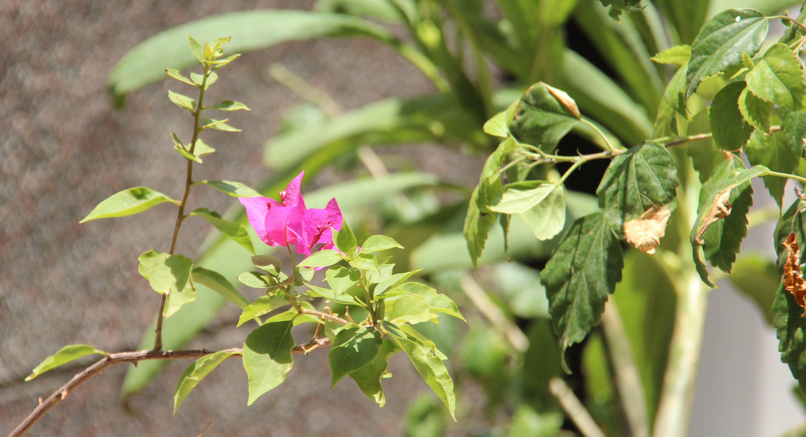
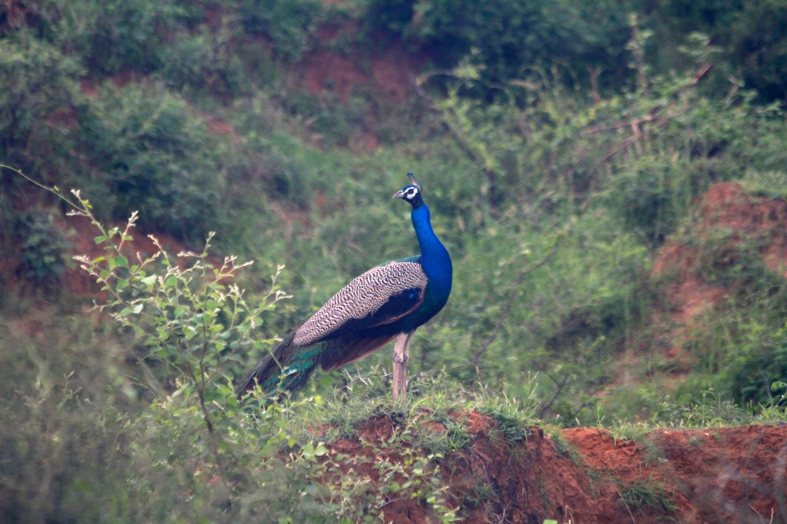
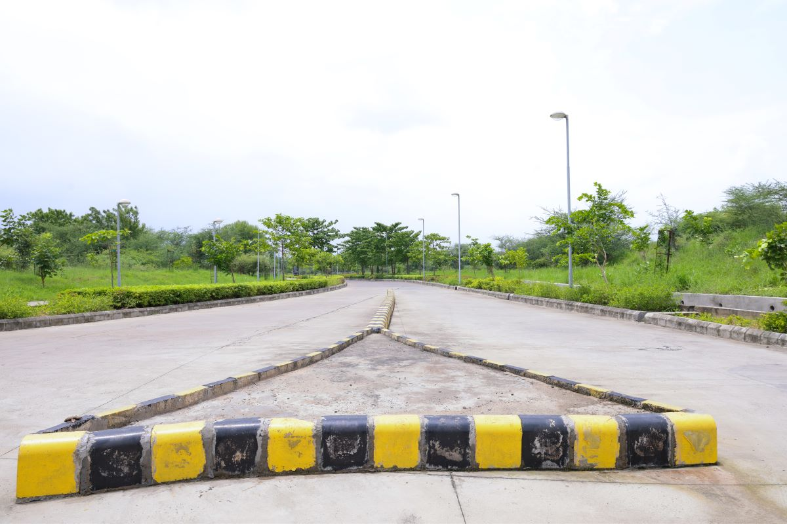
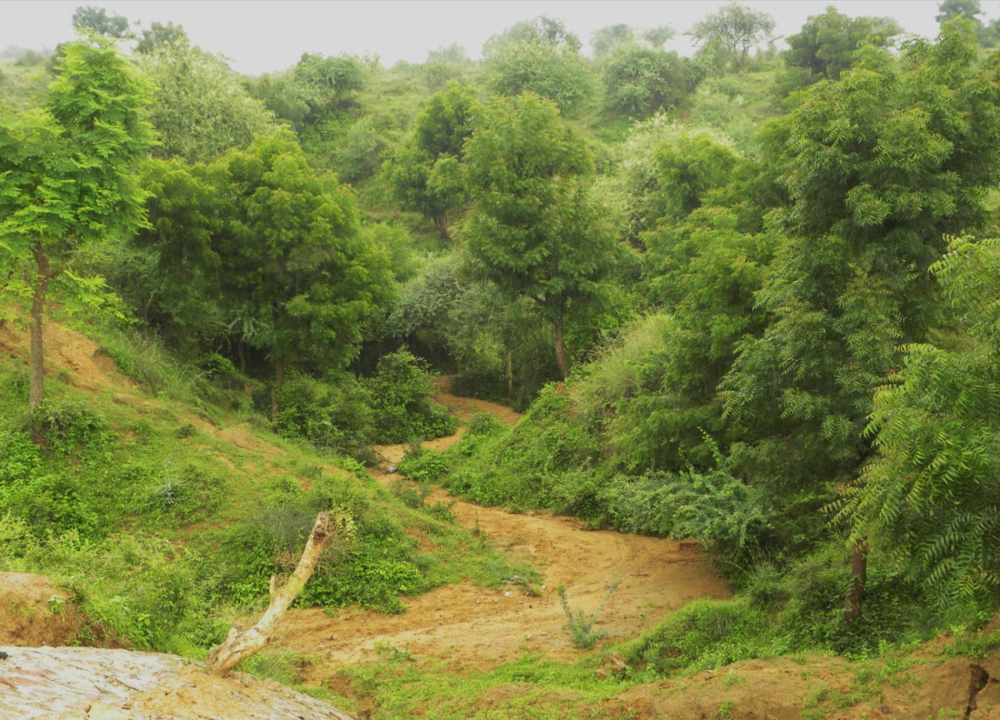
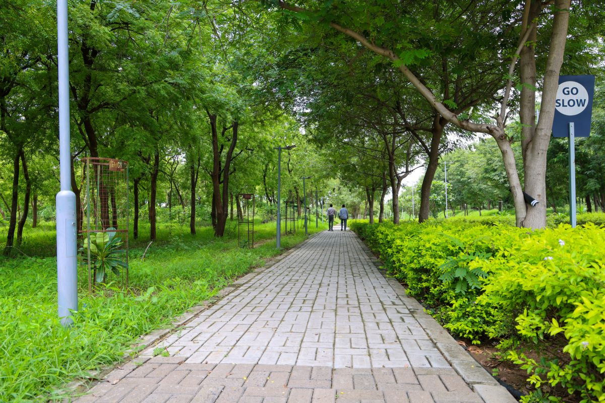
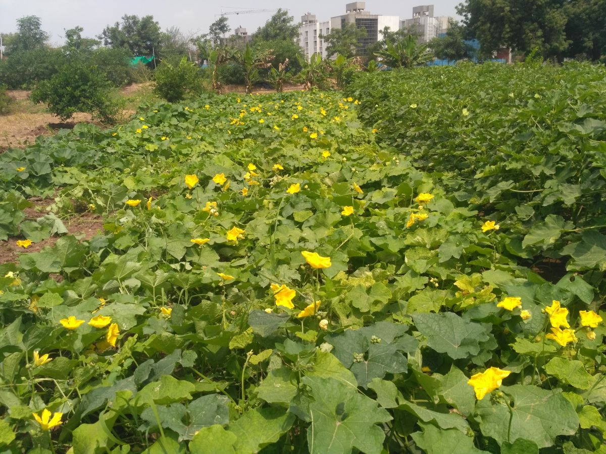
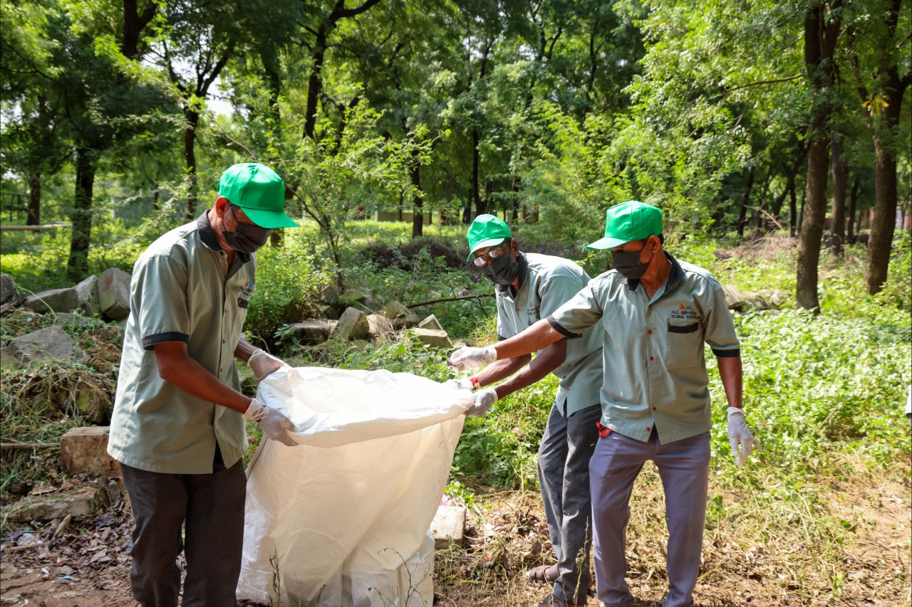
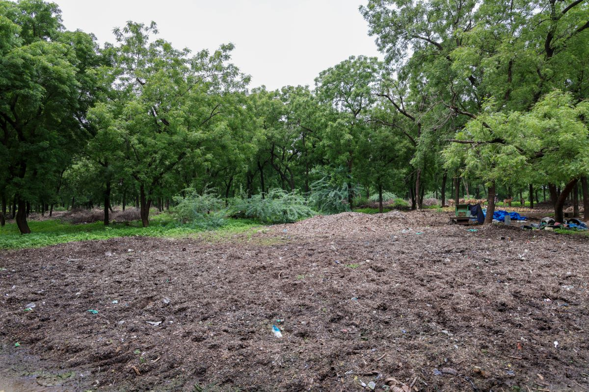
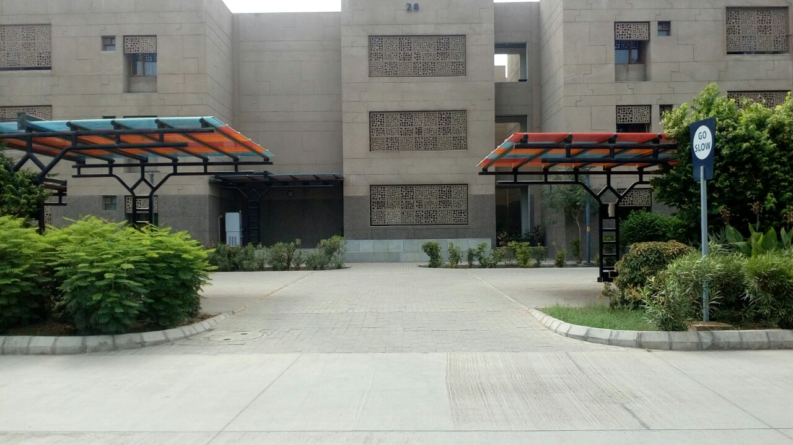
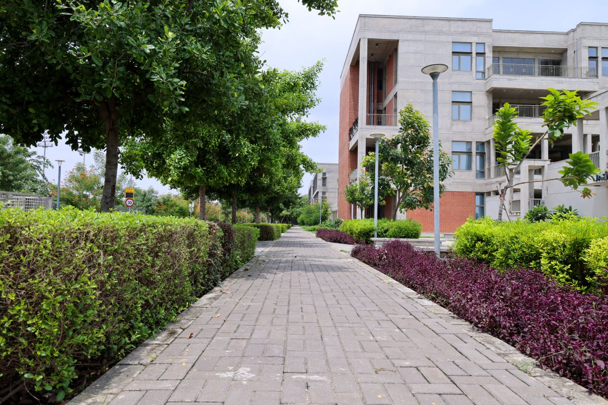

More than a lakh trees, open lawns and hedge-lined roads make IIT Gandhinagar feel more like a forest than a campus. Here's how it grows, and how it stays that way.

Long before the campus, this land was farmland. Many of its old neem and mango trees were kept, and they still shade the paths today.

The eroded ravines along the Sabarmati have been replanted with native trees like khijdo, bordi and harmo. They hold the soil together and give birds and wildlife a home.

Rows of broad-canopied trees line the main routes, so you can walk from hostel to classroom under an almost continuous canopy, even in a Gujarat summer.

Plants here are chosen for the local climate: native, drought-tolerant species watered with recycled water. New areas get native planting, not thirsty lawns.

A horticulture team of more than 60 people keeps hedges trimmed, trees in shape and lawns tidy across all 400 acres.

Every day's clippings come to the herbal garden by the biogas plant. They dry in the sun for two to three months, then go through the shredders: leaves in one, branches in another.

Shredded leaves enrich the campus compost, and wood chips cover bare soil around trees, keeping it moist and stopping erosion. The campus feeds itself.

Next time you cross the campus, notice the trees overhead, the mulch at their feet and the hedges along the road. It's a living system, and you're part of it.
Learn More arrow_outward